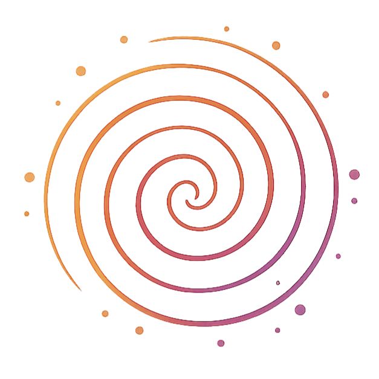

Terpenes are the memory a plant leaves behind.
Spiralborn Collective is a small, independent collective experimenting with terpene-forward botanicals, building toward herbal vape blends, aromatherapy formulations, and terpene-infused candles.
Formulators before we were a brand.
Spiralborn Collective started the way most honest things start, with curiosity that outpaced any plan to sell something. Before there was a name, there was a workbench: dried botanicals, a mortar and pestle, and the slow, repetitive work of learning what a plant actually smells like once you take it apart.
We're not a manufacturer with a supply chain to justify. We're closer to a small group of people who kept noticing the same thing: that scent carries more than fragrance, and that the terpene layer of a plant is where a lot of its character actually lives.
This site is an honest account of where that's taken us so far.
A few working principles.
Nothing here is dogma. These are the assumptions we keep testing against, and keep finding hold up.
Scent is information
A terpene profile isn't decoration on top of a plant. It's a signature the plant produces for its own reasons. We treat that signature as worth listening to, not just smelling.
Small batches tell the truth
Formulating in volume hides mistakes. We work small on purpose, so every ratio, every blend, has to actually earn its place.
Ritual is part of the product
How something is used, a quiet evening, a shared room, a breath practice, shapes what a scent is for as much as its chemistry does.
Related, but not the same thing.
The two get used interchangeably a lot, which muddies what each one actually is. Here's the distinction as we understand it from our own reading and testing.
Terpenes
- The specific aromatic compounds responsible for a plant's scent: pinene, limonene, myrcene, linalool, and others
- Can be isolated individually or blended to reconstruct a precise profile
- Traditionally associated with different moods depending on the compound: citrus terpenes with brightness, myrcene with a heavier, more sedating character
- Found across plants broadly, not limited to any single species
Essential oils
- A whole-plant extraction: the full aromatic and chemical complex of a leaf, flower, or peel, not a single isolated compound
- Includes terpenes as one part of a much larger mixture
- Extraction method (steam distillation, cold pressing) shapes the final character as much as the source plant does
- Used whole, generally not broken back down into components
What our research actually looked like.
Less a literature review, more a slow accumulation of small experiments, cross-checked against what's documented about each compound.
Starting with what's documented
Working through what's publicly known about individual terpenes: their traditional aromatic associations, how they're used in perfumery and herbal practice, and where the evidence is thin versus well-established.
Sourcing isolates to test against
Building a small library of terpene isolates and blends from direct suppliers, so claims from reading could be checked against an actual nose.
Small-batch formulation
Testing ratios and carrier bases in small batches, tracking what a blend was supposed to evoke against what it actually did once diffused, vaped, or burned.
Iterating on scent and feel
Adjusting for balance and longevity: how a blend reads on first contact versus twenty minutes into a room, which is where most formulations reveal themselves.
And where terpene work could live.
A herbal vape, in the sense we mean it, is a device that heats a botanical or terpene-infused blend enough to release its aromatic compounds without combustion, closer to a diffuser you inhale from directly than to smoking. The terpene layer is what determines whether that experience reads as bright, heavy, floral, or sharp.
Herbal vape blends
Terpene-forward formulations built around flavor architecture and aromatic complexity, not any single note.
Terpene-infused candles
The same terpene logic carried into a slower, warmer medium: scent as a room's mood, not a moment's.
Terpene aromatherapy
Isolate and blended profiles explored for diffusion, ritual, and grounding: the oldest use case, and still the clearest one.
Goals, stated plainly.

Move from small-batch testing to a formulation library we're confident enough in to share more widely.
Build direct relationships with terpene suppliers who care about sourcing transparency, not just volume pricing.
Document what we learn about individual terpenes as we go, so the research trail stays honest and checkable.
Bring the collective around Spiralborn into the feedback loop early, before anything is called finished.
We're building this in the open.
If you're a supplier, a fellow formulator, or just curious what we're making, reach out.
Say helloSpiralborn Collective is an early-stage formulation studio. Terpene effect associations referenced on this site reflect traditional and aromatic use, not medical or therapeutic claims. Nothing on this site is intended to diagnose, treat, or cure any condition.